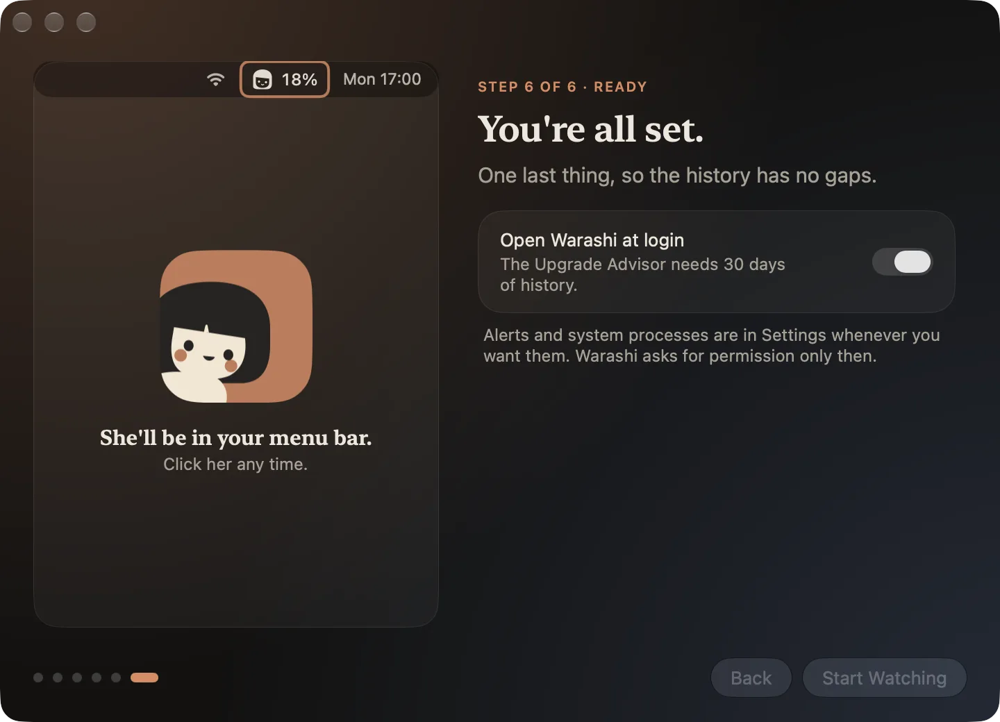

Gdy Warashi otwiera się po raz pierwszy, krótka prezentacja pomaga je skonfigurować. Każda strona ma demo na żywo po lewej i jeden lub dwa wybory po prawej. U dołu użyj Dalej i Wstecz; kropki pokazują, gdzie jesteś. Każdy wybór można później zmienić w Ustawieniach.
- Poznaj Warashi
Czym jest Warashi i trzy obietnice: Twoja historia zostaje na Macu, na start nie potrzeba konta ani pozwoleń, a anonimowe statystyki użycia pomagają ulepszać aplikację. Kliknij Rozpocznij.

Strona 1: Poznaj Warashi. - Jeden duszek, jedna liczba
Wybierz liczbę wyświetlaną obok duszka na pasku menu: CPU, pamięć, GPU, moc, temperatura, sieć, dysk, bateria lub sam duszek. Opcja Pokazuj, co wymaga uwagi pozwala liczbie zmienić się w ostrzeżenie (na przykład
▲ PAM 29 GB), gdy brakuje pamięci lub Mac jest gorący.
Strona 2: co pokazuje pasek menu. - Rzut oka na górę ekranu
Włącz Podgląd obok wycięcia, aby zobaczyć dwie liczby tuż obok wycięcia w Twoim MacBooku, oraz Wyspa na innych monitorach dla małej pigułki na ekranach bez wycięcia. Wskaż dowolne z nich, aby zobaczyć miniaturowy pulpit.

Strona 3: wycięcie i wyspa. - Ile kosztują Twoje aplikacje?
Włącz Zapisuj aplikację na pierwszym planie, aby zobaczyć, jak długo używasz każdej aplikacji i ile kosztuje, na pierwszym planie i w tle. Zapisywane są wyłącznie przełączenia między aplikacjami: bez tytułów okien, bez stron internetowych, bez naciśnięć klawiszy. Jest wyłączone, dopóki tego nie włączysz.

Strona 4: zapis aktywności (opcjonalnie). - Zobacz cały dysk
Naciśnij Otwórz Ustawienia systemowe i jednorazowo włącz Warashi w sekcji Pełny dostęp do dysku, aby Miejsce na dysku mogło zmierzyć wszystko, a macOS nie pytał wciąż od nowa. Warashi zauważa moment, w którym to włączysz. Sumuje tylko rozmiary i nigdy nie otwiera Twoich plików. Możesz to pominąć i włączyć później.

Strona 5: Pełny dostęp do dysku (opcjonalnie). - Wszystko gotowe
Włącz Otwieraj Warashi podczas logowania, aby historia nie miała luk: Doradca zakupu potrzebuje jej z 30 dni. Kliknij Rozpocznij monitorowanie, a duszek pojawi się na pasku menu.

Strona 6: otwieranie podczas logowania, a potem Rozpocznij monitorowanie.
Gdy coś nie działa
- Otwieranie podczas logowania się nie utrzymuje: macOS może wymagać Twojego zatwierdzenia. Otwórz Ustawienia systemowe › Ogólne › Rzeczy i rozszerzenia otwierane podczas logowania i zezwól Warashi.
- Prezentacja się nie pojawiła: otwórz Warashi z Aplikacji, a potem Ustawienia › Ogólne › Pokaż powitanie ponownie.
Więcej w sekcji Rozwiązywanie problemów lub napisz na adam@warashi.app.